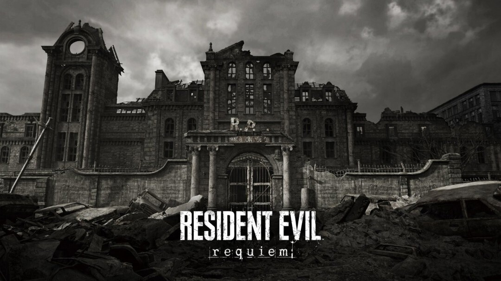

Desenvolvedor de "Resident Evil: Requiem" revela easter eggs escondidos no jogo
Equipe da Capcom confirma que diversos segredos do jogo fazem referência direta aos títulos clássicos da franquia.
Publicado em 2026 • Redação Geek News

Os fãs da franquia Resident Evil estão descobrindo diversos segredos escondidos em Resident Evil: Requiem, novo título da série de survival horror da Capcom. Segundo um dos desenvolvedores do jogo, vários easter eggs foram espalhados pelo mapa como homenagem aos jogos clássicos da franquia.
Entre os detalhes encontrados pelos jogadores estão documentos secretos que fazem referência direta aos eventos do primeiro Resident Evil e também menções ao laboratório da Umbrella, organização responsável pelos experimentos com o vírus.
Outro detalhe curioso está em uma sala escondida dentro do jogo que recria quase exatamente o layout da famosa mansão Spencer, cenário principal do primeiro jogo da franquia lançado em 1996.
A equipe de desenvolvimento afirmou que muitos dos segredos ainda não foram encontrados pelos jogadores e que a comunidade provavelmente continuará descobrindo novas referências nas próximas semanas.
Resident Evil: Requiem já é considerado por muitos fãs um dos jogos mais completos da franquia, justamente por misturar novidades com homenagens à história da série.